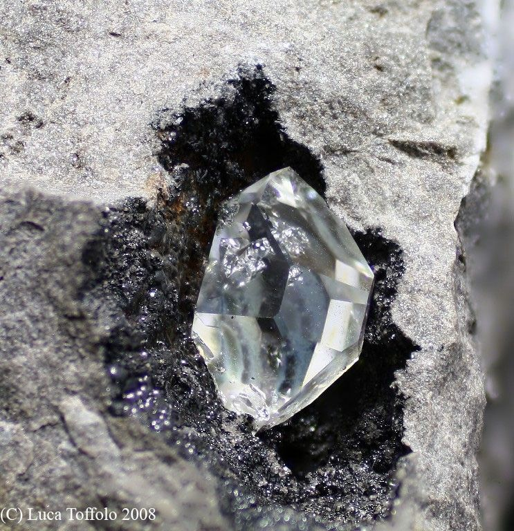
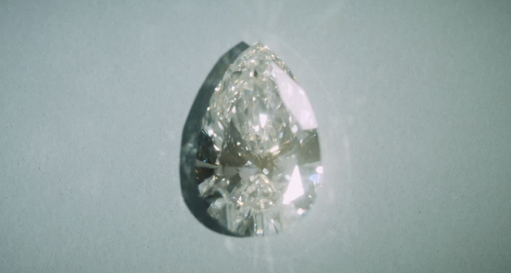
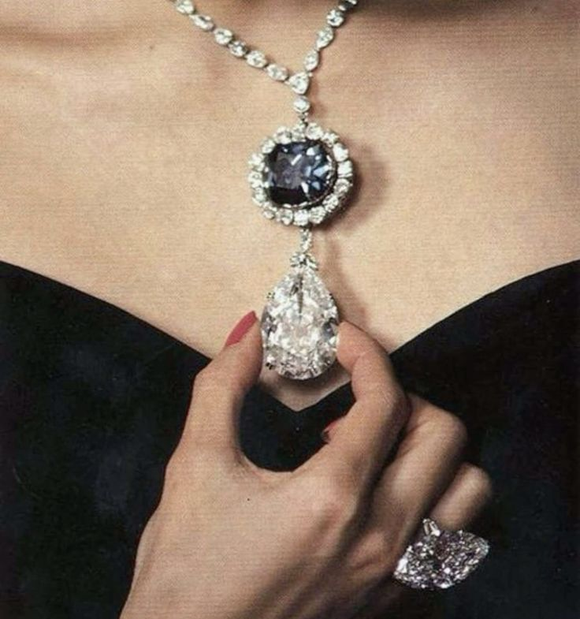
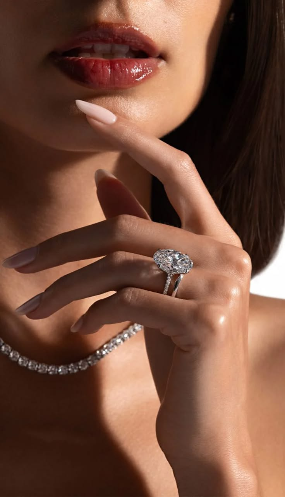
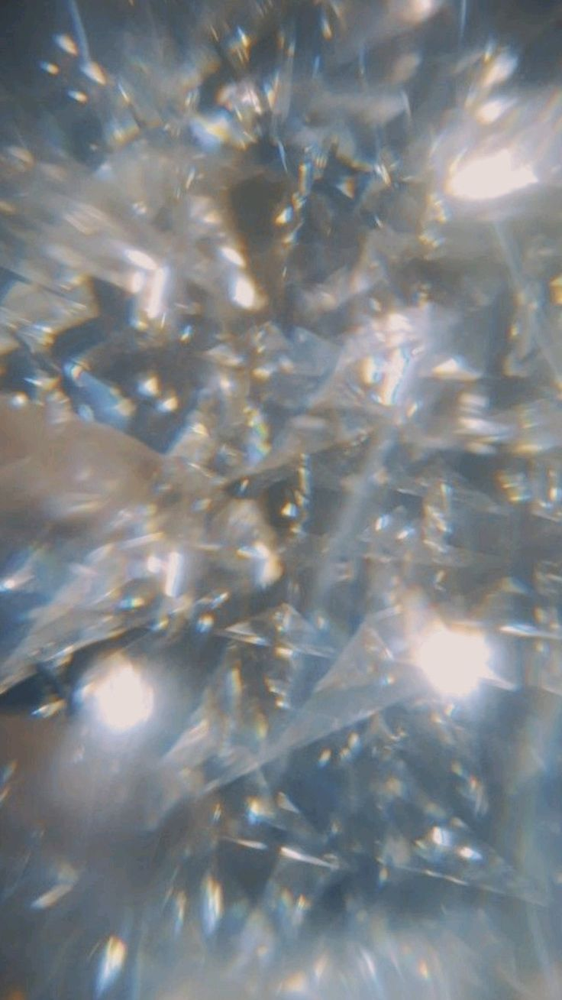

01ORIGIN
Born beneath
the earth
Discover how extraordinary pressure and heat create one of nature's most remarkable materials.

01 — THE STONE
From the depths of the earth to the world's most extraordinary jewellery houses, diamonds have captured human fascination for centuries. Their story is one of rarity, beauty, science and obsession.

01ORIGIN
Discover how extraordinary pressure and heat create one of nature's most remarkable materials.

02HISTORY
From ancient India to modern luxury, follow the diamond through centuries of human history.

03MODERN ERA
How diamonds became intertwined with romance, status, fashion and modern luxury.

02 — A MATTER OF TIME
A diamond's journey begins deep beneath the earth, where extraordinary pressure and temperature transform carbon into a crystalline structure unlike almost anything else found in nature.
What eventually reaches a jewellery box has travelled through geological time — long before human history began.
03 — THE FOUR Cs
Every diamond is unique. The Four Cs provide the internationally recognised language used to describe its characteristics.